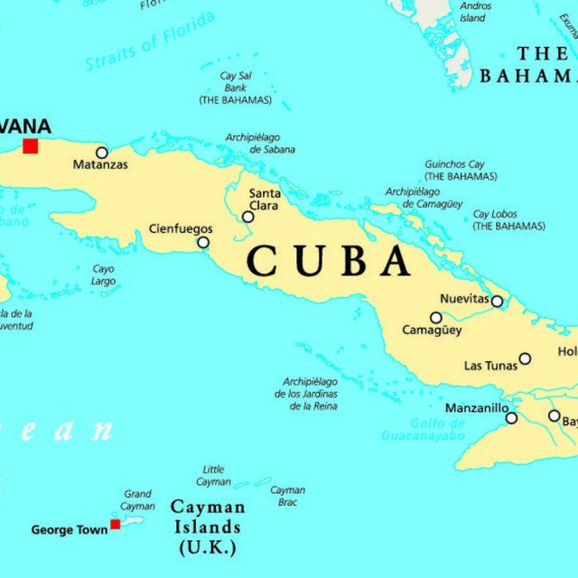

The Eclectic Polymath Podcast · Archive
#193 Why Cuba Is Where People Go to Vanish

About this episode
"Fake my death, go to Cuba, that's the only option." Kendrick Lamar compressed an entire American fantasy into one line on "ELEMENT." (DAMN., 2017). He didn't do it — but the line works because every American ear already knows what Cuba means: the place you go when you need to disappear.
Underneath the lyric is real history. Assata Shakur escaped prison in 1979 and received political asylum in Cuba, living there beyond America's reach for over four decades. She wasn't the first — the 1960s and '70s saw "take me to Cuba" become the signature demand of airline hijackers, while figures like Robert F. Williams and Huey Newton also fled to the island.
Key points
- Here's the twist the research uncovered: people in Cuba aren't actually hard to find.
- Extradition treaties technically exist but don't function; Cuba decides who it returns.
- Add the embargo's information shadow and 90 miles of water that might as well be an ocean, and you get a place where American power stops.
- Conspiracy theorists claimed Tupac faked his death and went to Cuba — borrowing the geography from Assata, his godmother, whose real asylum gave the rumor a ready-made location.
- In Queen & Slim, the protagonists run for Cuba as a reverse Underground Railroad, freedom lying south instead of north.
More like this
#207 Iran-Contra: The Scandal That Pardoned ItselfOctober 14, 20261:17:02#210 Mongolia: How to Stay Yourself Between Russia and ChinaOctober 14, 202650:36#194 Obama's Shadow Wars: Drones, Raids, and the Power Vacuums They Left BehindOctober 6, 202647:36#187 Philippines: How a Nation Remade What Empires Left BehindOctober 3, 202659:03